|
TIPOS DE INCUBADORAS Y SUS COMPONENTES
Marcos Martínez, 2006
Es habitual encontrarse ante el desafío de la incubación en el último
momento, a veces incluso con inesperadas puestas ya depositadas. A
continuación se muestra un repaso a las alternativas más habituales y
conocidas por la mayoría de criadores de tortugas. No pretende esto
ser un texto sobre incubación sino más bien sobre incubadoras, aunque
inevitablemente se repasen algunos aspectos básicos y generales del
proceso de la incubación en sí mismo.
1. PARÁMETROS DE INCUBACIÓN.
3 son los parámetros principales a
controlar en cualquier proyecto de incubación, los cuales deben estar
totalmente regulados previamente a la introducción de los huevos.
1.1. Temperatura.
Es el factor más importante a tener en
cuenta y punto de partida de cualquier montaje de incubación
artificial. La mayoría de especies deben ser incubadas a temperaturas
que ronden los 28-31.5ºC, habiendo desarrollo embrionario dentro del
rango 25-34ºC aproximadamente. Unas pocas horas fuera de esos
parámetros pueden provocar la muerte del embrión.
El mantenimiento de temperaturas
constantes debe ser el objetivo de cualquier proyecto de incubación.
Existen varias excepciones a esta regla: Primero están las especies
que son claramente favorecidas por un ciclo de temperaturas día/noche,
como es el caso de Malacochersus tornieri y Homopus signatus (Loerh,
1997a), especies que por las condiciones climáticas, por la
composición del substrato o por la poca profundidad a la que desovan,
experimentan en la naturaleza marcados cambios de temperatura
día/noche. Otro caso distinto son aquellas que necesitan de paradas en
el desarrollo embrionario (diapausa), generalmente coincidiendo con
bruscos cambios de humedad ambiental, a causa de los ciclos de
lluvia-sequía, y acompañados de suaves cambios de temperatura, que
algunas latitudes experimentan, como Pyxis sp. y Chersina sp. El fenómeno de
la diapausa ha sido recientemente sugerido como ocasional en la
especie Testudo hermanni (Soler Masanna & Martínez Silvestre, 2005),
coincidiendo con la parada invernal. Una tercera excepción a la regla
general de mantener temperaturas constantes en la incubación es la
práctica, cada vez más extendida, de afinar la temperatura deseada
durante el primer tercio de incubación y mantener temperaturas medias
el resto del tiempo, lo cual es recomendable para las tortugas con
Determinación de Sexo por Temperatura (casi todas las especies).
Puesto que la mayoría de autores afirman que el sexo es determinado en
algún momento durante el primer tercio de incubación, parece
innecesario mantener temperaturas altas el resto del tiempo si se
buscan hembras, arriesgando a obtener crías con malformaciones de
placas; o demasiado bajas, si se buscan machos, alargando en exceso el
desarrollo embrionario. Otros (Highfield, 1996a) opinan que el sexo se
determina durante el segundo tercio y así lo aplican en sus proyectos
de cría de Testudo kleinmanni en cautividad (Highfield, 1996b).
A menudo no se tiene en cuenta los
riesgos de sobrecalentamiento, sobre todo en latitudes sureñas, por lo
que conviene montar la incubadora en una estancia lo más estable y
fresca posible, como por ejemplo un sótano. Si esto no fuera posible,
se puede instalar una unidad enfriadora, como una Célula Peltier o
aprovechar la bomba de enfriamiento si nuestro montaje lo realizamos
en un frigorífico. En ambos casos necesitaríamos de un termostato de
doble relé, uno para controlar el circuito de calor y el otro de frío,
o en su defecto, un segundo termostato configurado para evitar picos
peligrosos de temperatura.
1.2. Humedad.
Es otro factor fundamental, si bien no
tan crítico, ya que no se necesita de una gran precisión y permite
mayor margen de error, especialmente en huevos de cáscara dura, mucho
más resistentes a la falta de humedad (Köhler, 2005). Los de cáscara blanda de algunas acuáticas son más sensibles a este
valor (Highfield, 1998). La mayoría de especies terrestres son
incubadas con éxito dentro del rango 60-85%, mientras que las
acuáticas, semi-acuáticas o de caja necesitan niveles más altos, en
algunos casos cercanos al punto de saturación. Se han realizado
experimentos con Testudo graeca, obteniéndose buenos resultados en
rangos tan distintos como 30%, 50-60% y 90%, siendo lo huevos
infértiles los únicos en deshidratarse rápidamente (Highfield, 1996a);
aunque no sea aconsejable llegar a esos extremos. Pursall (2002),
refiriéndose al género Testudo, y Soler Massana & Martínez Silvetre
(2005), para Testudo hermanni hermanni determinan que 15 minutos por
encima del 95% de humedad relativa supondrían la muerte por
ahogamiento del embrión, con menos riesgo en las primeras fases de la
incubación y recomiendan no bajar nunca del 50%. Por el contrario
existen casos extremos de resistencia a la humedad en especies
acuáticas, como es el caso de Dermatemys mawii, cuyos huevos pueden
resistir, en épocas de inundaciones, 30 días sumergidos literalmente
en agua (Köhler, 2005).
1.3. Ventilación.
A pesar de que los huevos sean
semienterrados en substrato, los niveles de aireación y oxigenación
son mayores de lo que se pueda creer. Las rígidas cáscaras de los
huevos de tortugas terrestres no pueden contraerse ni expandirse, como
hacen los de algunas especies acuáticas, pero aún así son
relativamente permeables y permiten el paso de agua y gases (Merchán Fornelino y Martínez Silvestre, 1999). El mayor problema que esto
presenta es la influencia que puede tener la ventilación en el mantenimiento de
temperaturas estables. Para ello, la mayoría de las incubadoras
comerciales están modestamente ventiladas, pero en cambio se sugiere
abrirlas regularmente, si queremos evitar problemas de anoxia en el
embrión. Estos problemas se pueden manifestar en la forma de
nacimientos prematuros (la falta de oxígeno a favor del CO2 es el
desencadenante natural para el nacimiento de muchas especies) y crías
muertas dentro del huevo, cuando otros factores, como el genético
queden descartados (Highfield, 1996a, 1997). Abrirlas 3-6 veces por
semana sería suficiente (Merchán Fornelino y Martínez Silvestre,
1999).
1.4. Iluminación.
No hay datos de la influencia que la luz
pueda tener en el proceso de incubación (Köhler, 2005), pero se
recomienda, por precaución mantener los huevos en condiciones de
penumbra u oscuridad, excepto obviamente, en los periodos de
observación.
2. COMPONENTES DE UNA INCUBADORA.
2.1. Termostato.
Sin duda el elemento más importante de
cualquier montaje. Los hay de muchos tipos, pero los más recomendados
son los electrónicos de control proporcional (de regulación manual o
digital) frente a los de tipo mecánico ON/OFF (también existen de
regulación manual o digital) (Highfield, 1996a). Mientras que los
clásicos aparatos basados en el sistema ON/OFF pueden producir
excesivas fluctuaciones de temperatura, además del riesgo que
supondría que fallaran y se quedaran fijados en una de las dos
posiciones, los de control proporcional, también llamados termostatos
por pulsos, funcionan aplicando pulsos cortos de corriente, de mayor o
menor duración según lo necesario para alcanzar la temperatura fijada.
Por desgracia, en España es difícil encontrar termostatos de este tipo
a precios razonables, como los Habistat©. Por tanto, hay que recurrir
a modelos digitales, como los que fabrica Osaka©, que aunque son
relativamente más caros, ofrecen infinitas posibilidades: duración del
ciclo de tiempo, margen de temperaturas a regular, "Set Point"
dinámico (que evita picos de temperatura demasiado bajos), modo de
“autotuning” (que a medida que va funcionando calcula los parámetros
más adecuados para conseguir una temperatura estable), etc. Por
supuesto, los termostatos a usar deber tener sonda externa para poder
ser regulados y manipulados desde el exterior y tener un control
ajustado a la temperatura de incubación.
|
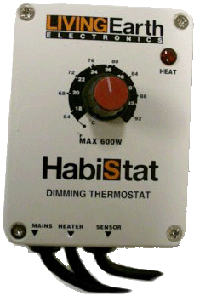
Termostato
proporcional de control manual Habistat©. |
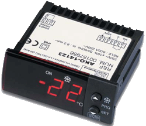
Termostato ON/OFF
digital Ako©.
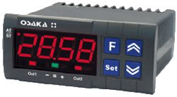
Termostato
proporcional digital Osaka©. |
Un caso especial en el que se
necesitaría de bastante precisión, y en que el uso de controladotes
proporcionales es casi obligatorio si se desean obtener neonatos de
un determinado sexo, son las especies en las que la temperatura de
incubación a hembras es demasiado alta y peligrosamente cercana a la
temperaturas con riesgo de malformación del embrión. Uno de estos
casos lo presentaría la especie Testudo hermanni, ampliamente
mantenida en cautividad en toda Europa. La temperatura pivotal que
resulta en un 50% de hembras y machos es de 31.5ºC (Eendebak, 2002),
mientras que la que garantiza hembras es ≥33ºC (Pieau, 2002), lo cual
deja un escaso margen de 0.5ºC si queremos obtener hembras sin
acercarnos a temperaturas arriesgadas.
2.2. Elemento calefactor:
Cualquier resistencia calefactora que soporte continuos encendidos y apagados o cambios de
potencia eléctrica es adecuada, pero no es recomendable el uso de bombillas
para este menester, ya que sus filamentos son muy sensibles y podrían
dejar a la unidad sin fuente de calor con relativa facilidad. Cables
eléctricos, mantas calefactores, tubos calefactores industriales,
entre otros, pueden ser usados con igual eficacia (Highfield, 1996a).
Conviene que el elemento calefactor sea de la potencia adecuada. Si se
utiliza un termostato ON/OFF, la potencia debe ser lo más ajustada
posible al tamaño de la incubadora y las temperaturas ambientes, para
así evitar fuertes fluctuaciones, pero con un termostato proporcional
se puede exceder en la potencia sin peligro, con la ventaja de tener
más potencia para estabilizar rápidamente cuando se abre la
incubadora.
|
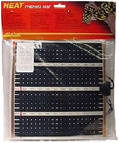
Manta eléctrica
para reptiles. |
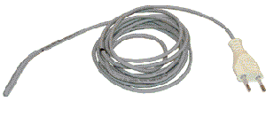
Cable
calefactor para reptiles. |
Cables y
resistencias industriales.
2.3. Carcasa.
El material elegido, no debe
deteriorarse en condiciones de humedad y al mismo tiempo debe ser buen
aislante de temperatura, razón por la cual muchos aficionados usan dos
capas, una de ellas de cualquier material plástico o sintético y otra
de material aislante como madera, corcho o porexpan, entre otros.
Algunas maderas tratadas, como el contrachapado marino, resultan
ideales, por su robustez, resistencia a la humedad y cualidades
aislantes. Otra alternativa muy conocida entre aficionados es el uso
de frigoríficos o neveras, que convenientemente adaptadas, son una
alternativa excelente.
|
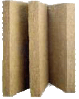
Lana de roca. |
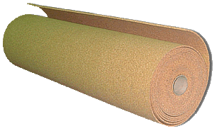
Corcho. |
|
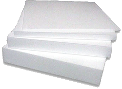
Porexpan. |
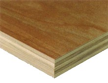
Contrachapado
marino. |
2.4. Substrato.
Se
conocen casos de éxito continuado sin uso de substrato (Pursall 2002),
(Soler Massana & Martínez Silvestre, 2005), es decir, colocando los
huevos directamente en bandejas. Sin embargo, por la obvia forma
ovalada de los huevos, parece más seguro y estable para la
manipulación de la incubadora, hacer uso de algún tipo de substrato,
que además proporciona efecto de colchón térmico. Muchos son los
materiales generalmente usados, unos con más éxito y posibilidades que
otros. Para condiciones de humedad moderada o baja se han usado con
igual éxito vermiculita, perlita, porexpan granulado, corteza, tierra,
o alguna mezcla de los anteriores. Si lo que se desea es un substrato
muy húmedo hay varias opciones como musgo y/o turba, solos o en
combinación con alguno de los anteriores. La arena no es recomendada
como substrato de incubación general (Highfield, 1996ª, 1997, 1998),
debido a su fina textura impide el intercambio de gases (Köhler,
2005), pero mezclada o sola ha resultado ser efectiva en algunas
especies como Testudo kleinmanni (Geffen & Mendelssohn, 1991), (Highfield,
1996b). De entre todos los materiales mencionados anteriormente el más
universalmente preferido para todo tipo de condiciones es sin duda la
vermiculita, sola o mezclada, un compuesto usado en jardinería para
mezcla de tierras y en construcción, para aislamientos. De naturaleza
silícea, tiene aspecto granulado y blando, formado por pequeñas
láminas superpuestas. Su naturaleza como material aislante lo
convierte en un substrato ideal, ya que actúa como colchón térmico (Highfield,
1996a) y al mismo tiempo, su textura granulada permite la aireación
con relativa facilidad. Se debe usar vermiculita pura, ya que la que
venden para construcción suele llevar aditivos como betún, asbesto o
amianto, y debe ser de grano medio o grueso para
facilitar la aireación (Köhler, 2005). El uso de perlita también está
bastante extendido, material que retiene más el agua que la
vermiculita, pero que lo “cede” en menor proporción (Köhler, 2005).
|
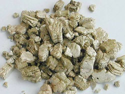
Vermiculita. |
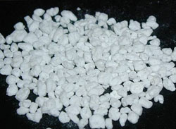
Perlita. |
Tanto o más importante que el tipo de
substratos sería la disposición de los huevos en el mismo. A más
substrato en contacto con los huevos, mayor estabilidad térmica, pero
mayor dificultad en medir y controlar la humedad de incubación. Por
tanto se suele recomendar que los huevos sean simplemente colocados
sobre el mismo o enterrados ligeramente (1/3 de su superficie); de
este modo el estado hídrico dependería casi exclusivamente del aire y
aún se aprovecharía la estabilidad térmica que da el substrato (Köhler,
2005).
En la bibliografía existente, son
habituales las recomendaciones de mezclar la vermiculita con agua a
una proporción de 2:1 (en peso) con agua para huevos de cáscara dura y
1:1 si éstos son de cáscara blanda (Merchán Fornelino & Martínez
Silvestre, 1999), aunque sorprendentemente, es difícil encontrar datos
de cómo mantener estas proporciones durante el proceso de incubación.
Los pocos datos al respecto son de criadores de especies que nacen en
época de lluvias y que afirman que el regar ligeramente el substrato
en la fecha de nacimiento aproximada, ayuda a desencadenar el
nacimiento de las tortugas (Loehr, 1997b). Otros (Köhler, 2005)
explican detalladamente los niveles de humedad a los que el substrato
de incubación debe mantenerse, aunque este tipo de mediciones resultan
en la práctica, bastante complejas. Una forma sencilla de aumentar la
humedad del substrato sería vertiendo agua (precalentada a la
temperatura de incubación) en las esquinas de los contenedores de los
huevos, evitando siempre el contacto directo con los mismos, medida
que puede ser necesaria con algunos huevos de cáscara blanda, que
dependen algo más de la humedad del substrato (Köhler, 2005) y que no
presentan tanto riesgo de anoxia por saturación. Aunque, como se
indica anteriormente y como norma general, si los huevos están
enterrados ligeramente, no es necesario tener un control exhaustivo,
ni una dependencia tan acusada sobre la humedad del substrato, sino
mas bien en la del aire, más fácil de medir con un higrómetro
convencional.
2.5. Ventilación interna.
Las mejores incubadoras son sin duda las
de aire estático, es decir, sin ningún ventilador. Los modelos de
ventilación forzada que se venden para aves no son recomendables para
ser usados con huevos de tortuga, ya que tienden a resecar la cáscara
con relativa facilidad (Highfield, 1996a). En algunos casos, como en
incubadoras de gran tamaño, su uso puede ser imprescindible, pero
deben ser correctamente posicionados de forma que el flujo de aire no
dé directamente sobre los huevos y su potencia debe ser correctamente
regulada. Incluso en grandes montajes se pueden obtener temperaturas
uniformes sin necesidad de usar ventiladores si se construyen en
sentido horizontal, aunque la disposición vertical de bandejas puede
ser beneficiosa para incubar a distinta temperaturas en una misma
unidad (Highfield, 1996a).
2.6. Humidificación.
La forma más fácil y universalmente
conocida para mantener los rangos de humedad deseados de un modo
estable es colocando bandejas de agua en las que se pueden introducir
esponjas. De este modo, añadiendo o quitando superficie de evaporación
se consigue determinar cual es la superficie necesaria (Pursall,
2002). Existen otros sistemas mucho más automatizados y complejos, que
incorporan los modelos de gama alta de incubadoras comerciales. Estos
sistemas se pueden instalar a una incubadora de fabricación propia con
el uso de un controlador proporcional (como los mencionados de
Osaka©,) al que se le añade una sonda de humedad y que a su vez
controla el funcionamiento de un humidificador por ultrasonidos
(Checa, 2004).
|
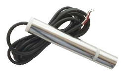
Sonda de
humedad Osaka©. |
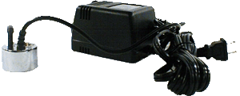
Humidificador
por ultrasonidos. |
2.7. Masa adicional.
Continuando con lo dicho en el apartado del substrato, cuanta más
masa, mayor estabilidad en la temperatura, pero con matices. El mejor
lugar donde añadir masa sería sin duda el recipiente mismo de los
huevos, o en los recipientes preparados para futuras puestas, como
aconsejan por ejemplo los fabricantes de la incubadora Jaeger©. El
resto de la incubadora, es mejor cargarla lo mínimo posible, porque
esa carga, aunque por un lado resultaría útil para mantener la
temperatura durante un tiempo si fallara la corriente eléctrica o al
abrirla para inspeccionar los huevos, por otro tiene un efecto muy
adverso, aumentando las oscilaciones de temperatura. Con un termostato
proporcional se notará mucho menos ese efecto que con un ON/OFF, pero
lo cierto es que se puede evitar de manera más fácil cargando lo
mínimo, fuera del recipiente de incubación. Así el termostato trabaja
con mayor sensibilidad, pudiendo actuar más rápido para corregir las
variaciones de temperatura sin tener que vencer tanta inercia térmica.
2.8. Instrumentos de medición.
Todo esfuerzo destinado en mantener los parámetros de incubación
dentro de un determinado rango resulta inútil si no se dispone de los
instrumentos de medición necesarios, razonablemente calibrados. Para
medir la temperatura existen diversas posibilidades. Primeramente
están los termómetros de alcohol o mercurio, algunos de ellos bastante
precisos, especialmente los destinados para uso fotográfico, pero
tienen una incómoda lectura y los modelos que marcan máximas y mínimas
necesitan ser constantemente agitados para volver a tomar mediciones.
La mejor opción la ofrecen los termómetros digitales de gama media,
con registro de máximas y mínimas y con sondas externas, que pueden
ser colocadas en las proximidades de los huevos ofreciendo una fiel
aproximación a la temperatura de incubación real y pudiendo manejarlos
desde el exterior de la incubadora, evitando así aperturas
innecesarias. Algunos de ellos también incorporan un higrómetro,
también con registro de máximas y mínimas, pero en este caso la sonda
de medición de humedad está incorporada en el aparato lo cual lo priva
de cierta funcionalidad.
|
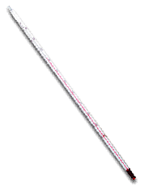
Termómetro de alcohol. |
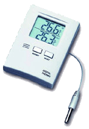
Termómetro digital Max/Min con
sonda externa. |
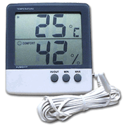
Termo-higrómetro digital Max/Min
con sonda externa. |
Para medir la humedad también existen
higrómetros de esfera, algunos de ellos bastante fiables, como los de
pelo sintético, aunque otros dejen mucho que desear. El problema en
casi todas las sondas de humedad es la saturación. Cuando la sonda ha
estado expuesta a una humedad muy alta, queda saturada, y al volver a
bajar la humedad ambiental, la sonda sigue marcando niveles por encima
de los reales, en algunos casos estropeándolas de por vida, en modelos
de baja calidad. Una tercera opción serían las estaciones
meteorológicas digitales, que dotadas de sondas inalámbricas, son la
solución ideal para medir la humedad “a distancia”, y aunque por su
robustez no sean las más adecuadas para medir la temperatura de
incubación, ofrecen una segunda lectura, siempre bienvenida.
|
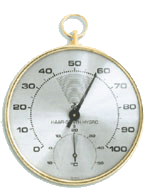
Higómetro de pelo sintético.
Sonda inalámbrica de estación
meteorológica. |
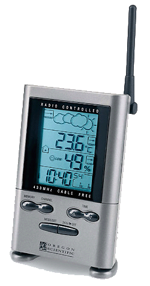
Estación meteorológica con 3
sondas inalámbricas. |
Un aspecto a destacar, y a menudo
olvidado, es el de la calibración. Conviene saber a ciencia cierta si
los termómetros, higrómetros y termostatos usados indican los valores
correctamente. El material de la sonda condiciona su precisión y el
rango útil de temperatura. Las desviaciones que algunos termómetros
presentan no suelen ser lineales, es decir, no son desviaciones
constantes a todas las temperaturas, por lo cual conviene que sean
calibrados en valores aproximados a los de incubación. Para así
hacerlo, nada mejor que un termómetro clínico, una herramienta
extremadamente precisa dentro de un rango de temperatura muy concreto.
De esta forma, calentando agua a 35-40ºC y comparando lecturas, se
pueden obtener las desviaciones aproximadas de nuestros termómetros y
termostatos. Conviene matizar que la fundas que recubren las sondas de
temperatura están fabricadas de materiales muy diversos, por lo que no
todas gozan de la misma velocidad de lectura. Aunque para incubar
puede resultar innecesario, se puede calibrar también a temperaturas
mas bajas. Bastaría un recipiente en el que se depositen cubitos de
hielo (de agua destilada) y cuando empiecen a derretirse pero teniendo
todavía algunos cubitos, se sumerge totalmente la sonda, sin tocar con
las paredes del contenedor y deberían alcanzarse los 0ºC exactos. Las
sondas de las estaciones meteorológicas no pueden calibrarse de este
modo, evidentemente, así que sólo queda la opción de dejarlas en un
lugar cerrado, a salvo de radiaciones y corrientes de aire (como por
ejemplo en un armario o cajón) e ir anotando las sucesivas mediciones.
Algunos termómetros y termostatos permiten ser reconfigurados, pero no
la mayoría, por lo que bastaría con anotar en cada aparato la
desviación aproximada de lectura, si la hubiese, y siempre tenerlo en
cuenta en el futuro.
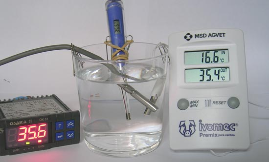
Calibrado con termómetro clínico
(Marcos Martínez).
3. TIPOS DE INCUBADORAS
3.1. Incubadoras “Baño María”.
Es el modelo más barato y sencillo de
montar. Consta de dos recipientes, uno más pequeño, donde se depositan
los huevos, y otro mayor, con agua, que alberga al anterior. El
elemento calefactor es un termómetro/termostato de los usados en
acuarofilia que indirectamente, y a través del agua, calienta el
recipiente de los huevos (aunque para mayor precisión se puede regular
el calentador a máxima potencia y conectarlo a un termostato externo
con sonda). Algunos criadores confían plenamente en este tipo de
montajes, que a lo largo de muchos años, han demostrado ser muy
eficientes, aunque sin embargo, presentan diversas dificultades a
tener muy en cuenta. Primero, el control de la temperatura es poco
preciso, debido a que la temperatura de los huevos está influenciada
por dos medios distintos, el aire y el agua, y sólo se tiene control
sobre uno de ellos. Debido a esto, los cambios de temperatura externa
afectan notablemente a la incubación y se precisa de sucesivas
regulaciones a posteriori. Formas de combatir esto serían el uso de un
termostato externo, de buen material aislante, cargar generosamente de
substrato el recipiente de incubación, colocar la incubadora en una
habitación con pocos cambios de temperatura (un sótano por ejemplo),
etc. Aún tomando muchas precauciones el agua disminuye y deja al
calentador con la misma potencia actuando sobre menos volumen
constantemente. El segundo problema que presentan es el control de la
humedad. A igual temperatura de agua (realmente el único parámetro
sobre el que se tiene control) se produce más saturación en el aire si
las temperaturas son bajas y menos si son altas, por lo que hay que
ventilar la incubadora más o menos según el día, para tener controlada
la humedad ambiente, con la subsiguiente influencia negativa, que en
el control de la temperatura que estos cambios de ventilación
supondrían. En resumen, este tipo de montajes pueden ocasionar muchos
dolores de cabeza y constantes modificaciones, pero una vez dominados,
pueden ser bastante eficientes en último término. De todos modos, no
son para nada recomendadas para incubar a temperaturas constantes y
precisas, si lo que se desea es obtener crías de un determinado sexo.
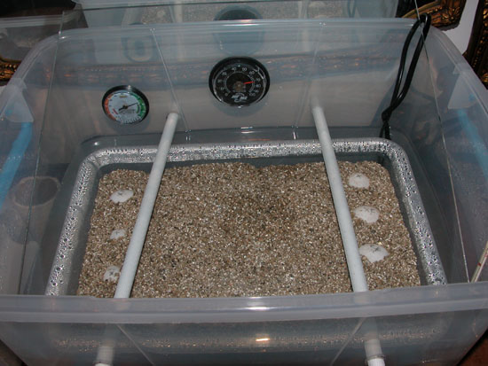
Incubadora "Baño-María". Las barras
metálicas fijan al recipiente interno contra el fondo y sirven de
soporte para la tapa de metacrilato. La tapa inclinada impide que las
frías gotas de agua acumuladas caigan sobre los huevos (Raimundo
Villanueva).
3.2 Incubadoras de aire estático.
También de montaje muy sencillo y alta
precisión si son equipadas con un termostato proporcional; lo cual
puede ser relativamente difícil, ya que los termostatos proporcionales
de control manual (ruleta) son incomprensiblemente caros en el mercado
español (Habistat©, por ejemplo) y los digitales requieren cierto
tiempo para aprender a ser manejados y tampoco son excesivamente
económicos. Frente a las incubadoras presentadas en el siguiente punto
(Jaeger© y Hovabator©), tienen la ventaja de que el tiempo invertido
en montarlas y en aprender a manejar el termostato se rentabiliza en
la mayor capacidad de la que se les puede dotar y en su mejor precio.
Son bastante sencillas de ensamblar, basta con colocar el elemento
calefactor en el fondo, ya que el aire caliente tiende a subir,
permitiendo obtener temperaturas muy estables y uniformemente
repartidas. Unos centímetros por encima una rejilla albergaría a los
recipientes de los huevos, apropiadamente protegidos para que los
neonatos no puedan salir, dejando algo de espacio entre ellos para que
el aire circule. La sonda del termostato debería ser colocada a la
misma altura de los huevos, pero sin estar en contacto con ningún
cuerpo, de modo que pueda trabajar con la mayor sensibilidad a los
cambios de temperatura del aire, mientras que la sonda del termómetro,
como en cualquier otra incubadora, se dejaría ligeramente
semienterrada en el substrato, junto a los huevos, y de esta forma
ofreciendo un reflejo fiel de la temperatura real de incubación (Highfield,
1996a). Se puede adaptar para incubar huevos de cáscara blanda, que
necesitan más humedad, simplemente colocando una tapa individual en
los correspondientes recipientes de los huevos (Highfield, 1996a), de
esta forma, en la misma unidad, se pueden incubar huevos a distintos
niveles de humedad. En ese recipiente particular, habría que prestar
especial atención a la ventilación, aunque por su propia naturaleza,
los huevos de cáscara blanda sean menos sensibles a la falta de
oxígeno en el aire. Estas incubadoras pueden ser extremadamente
precisas (±0.1ºC) y sin duda son el montaje de mejor relación
calidad/precio; con el inconveniente asumido de su construcción
manual.
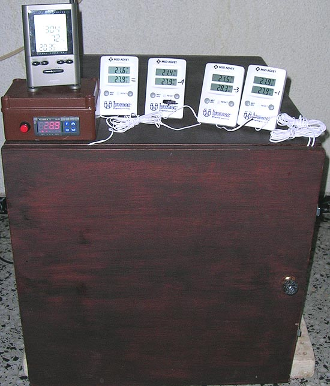
Vista exterior de una incubadora "en
seco". El material elegido es enchapado marino. La unidad de control
de temperatura es un termostato proporcional digital Osaka©, la temperatura se mide con un
termómetro digital con sonda externa y registro de máximas y mínimas y
la humedad con la sonda inalámbrica de una estación
metereológica Oregon Scienfic©. En los laterales hay pequeños agujeros
de ventilación, arriba y abajo, para favorecer un modesto pero
continuo flujo de aire, aunque para mayor seguridad es abierta todos
los días.
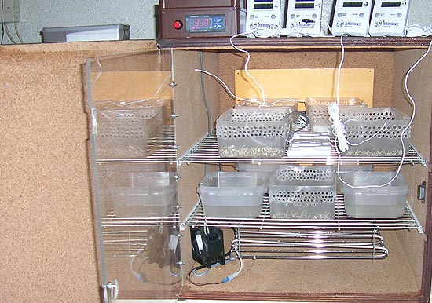
Vista interior de la misma
incubadora. La primera rejilla contiene los recipientes de los huevos,
la segunda aloja a las cubetas de agua y más recipientes de incubación
si fuera necesario. Aunque no se aprecie en la imagen, la sonda del
termostato esta suspendida en el aire, sin tocar ningún objeto
mientras que las sondas de los termómetros se colocan sobre la
vermiculita. No es exactamente de aire estático, ya que tiene un
ventilador de muy baja potencia, orientado para que no dirija el aire
a los recipientes de incubación. El mismo se activa sólo cuando el
elemento calefactor funciona.
3.2. Incubadoras comerciales de aire estático (Jaeger© y Hovabator©).
Varios son los modelos profesionales
disponibles en el mercado europeo y norteamericano, con unidades de
control y medición extremadamente precisas y automatizadas, pero con
precios desorbitados en la mayoría de los casos. Hay por el contrario,
dos modelos de gama media (Jaeger© y Hovabator©), con control de
temperatura proporcional, que han irrumpido en el mercado español con
mucha fuerza, y que ofrecen prestaciones, precisión y funcionalidad,
más que satisfactorias a precios razonables. A pesar de su frágil
aspecto a primera vista, su carcasa de porexpan endurecido es muy
firme, duradera, resistente a la humedad y tiene excelentes propiedades
aislantes. El aspecto rudimentario de sus termostatos (controlados con
una “ruedecita”) resultan ser unidades proporcionales de gran
precisión (atención especial a este punto, puesto que existen modelos
de Hovabator© de aspecto idéntico, con termostatos ON/OFF). En ambos
casos el elemento calefactor es una resistencia tipo cable, que se
sitúa en la parte de arriba. Tienen tapa superior transparente, lo
cual facilita la inspección sin necesidad de ser abiertas. Es fácil
mantener la humedad en ambas, especialmente en la Hovabator©, en la
que simplemente añadiendo agua a las canaletas del fondo del
recipiente se mantiene en los niveles deseados. En la Jaeger© hay que
remojar la esponja que se encuentra debajo de los recipientes de los
huevos, para lo cual hay dos alternativas, vertiendo agua directamente
sobre la misma de forma copiosa (ya que el agua traspasa la esponja y
se filtra por agujeros de ventilación del fondo) o sacándola cada
cierto tiempo para remojarla, sistema más duradero pero que implica
manipular los recipientes de los huevos. En pocas palabras, son la
opción más fácil y segura, considerando su precisión, su moderado
precio, y la sencillez de su ensamblaje (aunque Hovabator© eche de
menos un libro de instrucciones de montaje en el idioma de Cervantes).
Su único inconveniente podría ser el tamaño, aunque probablemente, y
si comercialmente les interesa a sus fabricantes, aparecerán en el
mercado modelos, similares en calidad/precio de mayor capacidad.
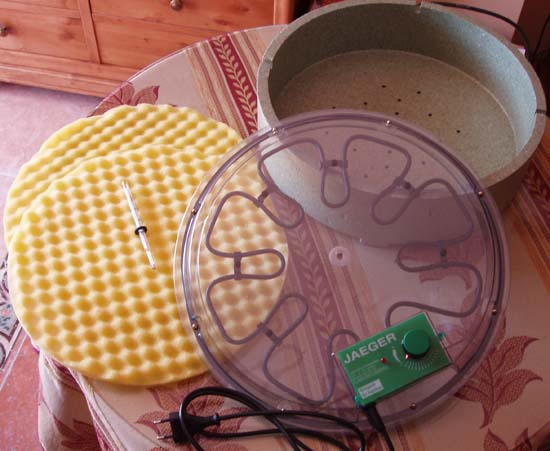
Jaeger© desmontada (Francisco
Sánchez).
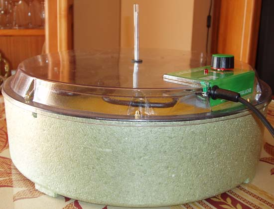
Vista frontal (Francisco Sánchez).
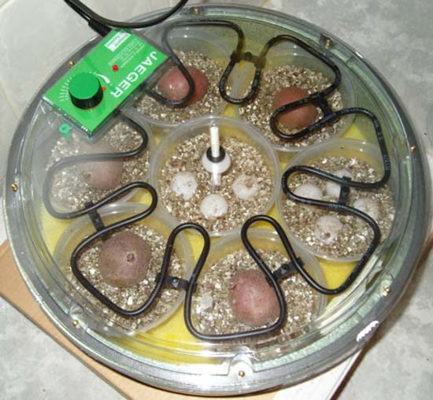
Jaeger© a pleno funcionamiento, con
las respectivas cubetas de huevos (Salvador Laguna).
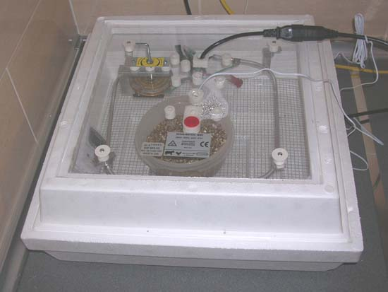
Vista general de Hovabator© (Fernando
Pérez).
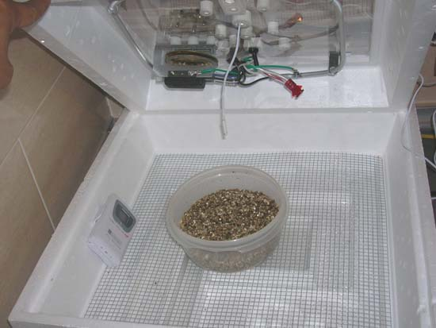
Interior de Hovabator© (Fernando
Pérez).
BIBLIOGRAFÍA
Checa, L. (2004). Control automático
de temperatura. Web de las Grandes Tortugas.
Eendebak, B. (2002). Incubation
Period and Sex Ratio of Testudo Hermanni Boettgeri. Chelonii, Vol.
3: 257-267. En: Proceedings of the International Congress on Testudo
Genus – March 7-10, 2001. Editions SOPTOM, Gonfaron.
Geffen E. & H. Mendelssohn, (1991).
Preliminary study on the breeding pattern of the Egyptian tortoise,
Testudo kleinmanni, in Israel. Herpetological Journal, 1:574-577
Highfield, A.C. (1996a). Practical
Encyclopedia of Keeping and Breeding Tortoises and Freshwater Turtles:16,
22-27 . Carapace Press, London.
Highfield, AC y Martin, J, (1996b).
Captive Breeding of the Egyptian Tortoise Testudo Kleinmanni.
Tortoise Trust Newsletter, Spring/96:15-17.
Highfield, A.C. (1997).
An effective
method of artificial incubation for mediterranean tortoise eggs.
Tortoise Trust Newsletter, Spring/97:6-7.
Highfield, A.C. (1998).
Egg FAQ.
Tortoise Trust Newsletter, Summer/98:6,11.
Köhler G. (2005). Incubation of
Reptile Eggs: 41-46, 67-71, 77-79, 93-99. Krieger Publishing
Company, Florida.
Loehr, V. (1997a).
A model for an
incubator with electronically regulated daily temperature cycle.
Tortoise Trust Newsletter, Summer/97:3-4.
Loehr, V. (1997b).
Incubator with
electronically regulated daily temperature cycle (part II).
Tortoise Trust Newsletter, Summer/97:5-6.
Merchán Fornelino, M. y Martínez
Silvestre A. (1999). Tortugas de España. Biología, Patología y
Conservación de las Especies Ibéricas, Baleares y Canarias:236-240.
Ediciones Antiquaria, Madrid.
Pieau, C. (2002). Temperature-Dependent
Sex Determination in Testudo Graeca and Testudo Hermanni. Chelonii,
Vol. 3: 144. En: Proceedings of the International Congress on Testudo
Genus – March 7-10, 2001. Editions SOPTOM, Gonfaron.
Pursall, B. (2002). Tortugas
Terrestres Mediterráneas: 44-45. Editorial Hispano Europea,
Barcelona.
Soler Massana J. y Martínez Silvestre A.
(2005). La Tortuga Mediterrànea a Catalunya. 94-98. Ediciones
L’Aguila de Cultura Popular, Col-lecciò Natura, 3, Tarragona.
|